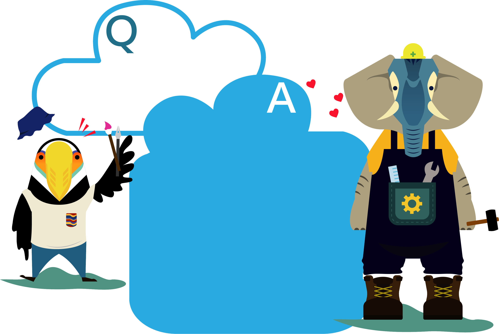
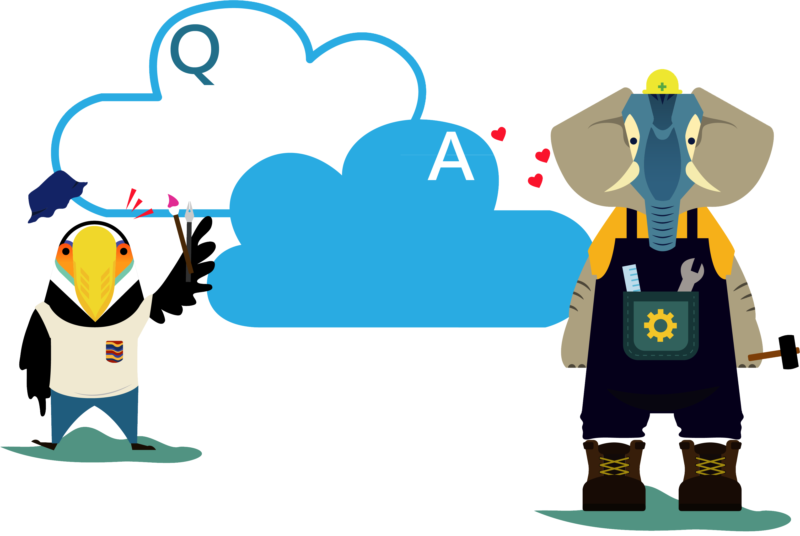
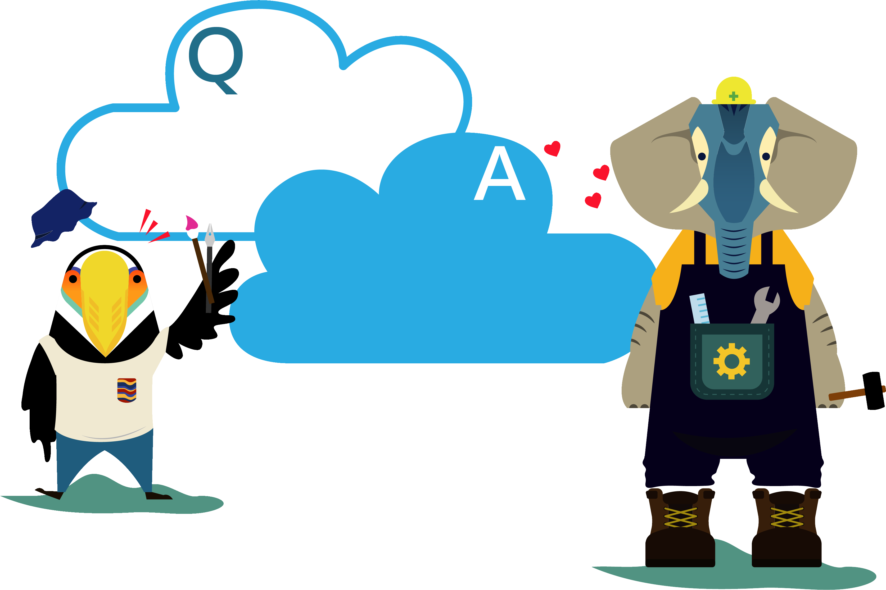
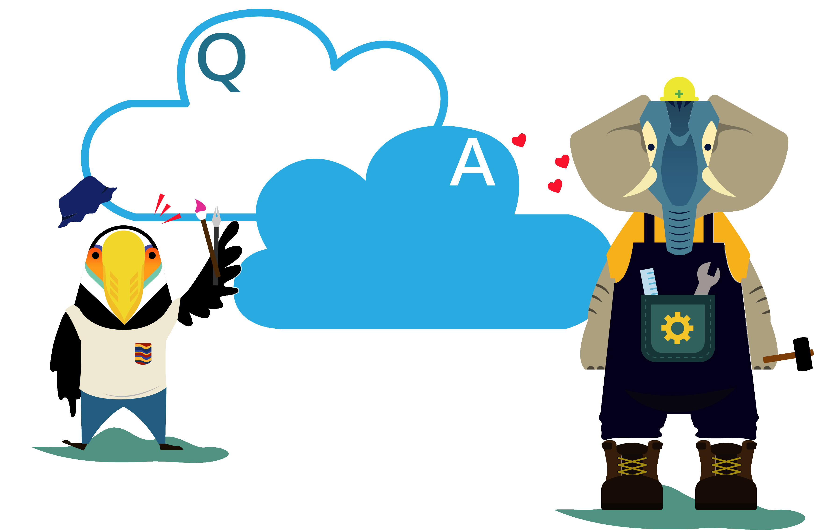

Your browser does not support the audio element.
☰
營隊宗旨
校長的話
營隊簡介
營隊目的
營隊公約
服裝儀容
營歌欣賞
最新資訊
活動資訊
第一天行程
第二天行程
第三天行程
營隊組織
執行團隊
隊輔人員
社團簡介
精彩回顧
回憶照片
找回感動
交通資訊
如何到雲科
校車資訊
雲科地圖
相關連結
Ｑ＆Ａ
常見問題
請假流程
請假單
營隊宗旨
校長的話
營隊簡介
營隊目的
營隊公約
服裝儀容
營歌欣賞
最新資訊
活動資訊
第一天行程
第二天行程
第三天行程
營隊組織
執行團隊
隊輔人員
社團簡介
精彩回顧
回憶照片
找回感動
交通資訊
如何到雲科
校車資訊
雲科地圖
相關連結
Ｑ＆Ａ
常見問題
請假流程
請假單

什麼是
YunTech
+
新生學涯開展營？
「YunTech
+
新生學涯開展營」
改變以往舊有的新生訓練模式，以更活潑的營隊方式帶領各位YunTech新鮮人進行始業活動，而並非一般的娛樂性營隊。
本營隊主要是為了讓YunTech新鮮人認識校園環境，不僅能幫助新生適應新環境的挑戰，同時還能在剛入雲科之際獲得豐富的學習經驗！
執行團隊係由雲科社團界富有熱忱的資深學長姐組成，並由各系系學會優秀的學長、姊擔任隊輔，帶領新生參與各式活潑創意、認識自我、探索校園的課程。
如果有事不能參加怎麼辦？
為了讓YunTech新鮮人能適應大學生活、善用學校學習資源以及瞭解自己的需求，我們希望同學全程參與，因此105學年度入學的全體大學部新生皆必須參加。
若營期間（09/05~09/07）因故無法參加而有不克出席之情況，請詳閱
請假流程
完成請假手續。

這個活動要收費嗎？
會附餐嗎？
用餐部分將由各系學會負責與規劃，可能會跟各位酌收餐費，其餘將不會向新生收取任何活動費用。
活動內容有哪些？
營期間執行團隊將設計一系列相關課程與活動讓YunTech新鮮人更快速適應大學新生活，透過這三天的營隊課程，幫助各位迅速熟悉雲科大新環境、瞭解學校核心價值、認識校園生活及學習資源，更能在開學之際拓展人際關係！
此外，將由各院系安排院系專業導航課程及院系迎新活動，協助新生認識各院系提供之學習資源、促進系向心力凝聚。營期間的詳細活動內容可至
課程表
瀏覽。

每天活動時間都是幾點到幾點呢？
營隊課程時間為每天上午09：00至21：00。活動課程內容可至
課程表
瀏覽。
我們都在哪裡上課？
主要上課的地點位於雲林科技大學大禮堂，但仍有遍及校園各角落的上課地點，兼具室內靜態課程與室外走動式的課程，加速同學認識YunTech校園新環境，課程充滿活潑創意！

營期間的住宿要住哪裡？
本營隊不集合住宿，因此住學校宿舍的YunTech新鮮人直接在宿舍留宿；非住宿的YunTech新鮮人在自己的校外租屋處住宿即可。
三天的活動期間中，晚上可不可以離開宿舍？
營期三天活動期間，為了顧慮團體活動規範及安全考量，原則上新生在晚上請與小隊共同行動，勿落單或自行離開宿舍，非必要情況皆請待在宿舍，若確有需要離開請告知隊輔或與工作人員聯繫。
如果活動期間，有些時間不方便參與，該怎麼辦呢？
為顧慮新生的安全考量，離營需辦理離營手續，若有相關不可抗拒之原因需要填寫離營單，需告知隊輔學長姐，並請於營隊中向活動服務台索取填寫。
還有疑問的話怎麼辦？
「YunTech
+
新生學涯開展營」
服務平台諮詢電話05-5342601分機2323吳添銘先生。
也可以將您的疑問以電子信件mail至yuntech.camp@gmail.com
或私訊FB粉絲專頁
【2016 YunTech
+
Orientation Camp 新生學涯開展營】
我們會迅速回覆您。
若尚有營隊以外任何疑問也可連結至
新生入學服務網
。